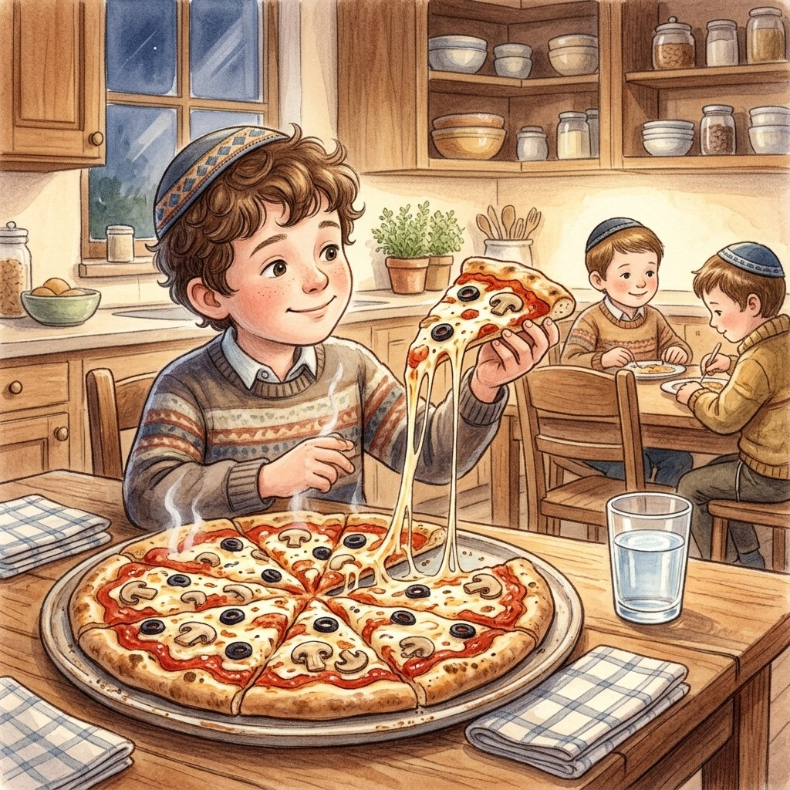

I've Got a Clue!
What Bracha Do We Make on Pizza?
About this episode: Yedani goes up to the Rav with a question: is it true that one slice of pizza is Mezonos and two slices are HaMotzi? What Sephardim and Ashkenazim do, and why the amount we eat can change the bracha.
0:00
--:--
We couldn't load the recording. Check your internet connection and try again.